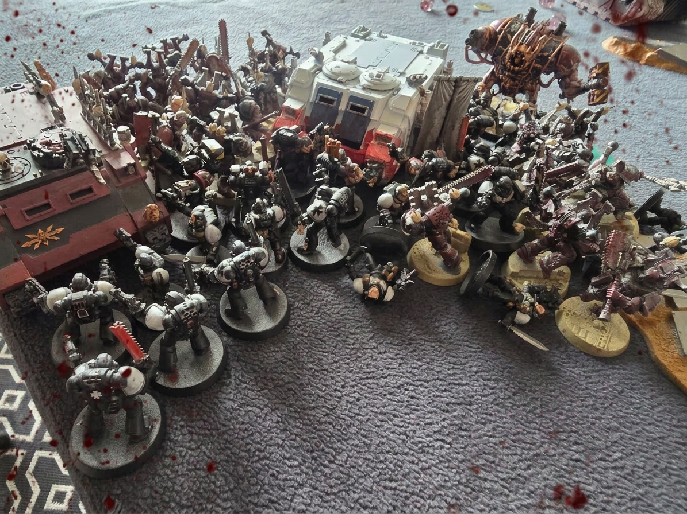
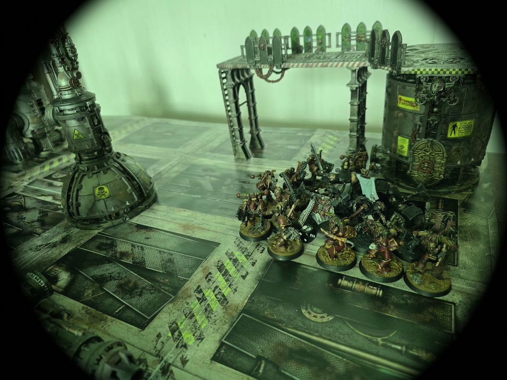
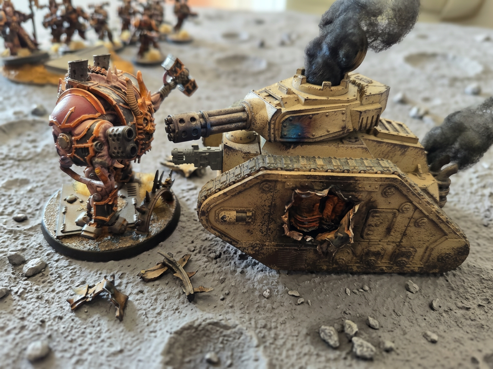

Double Engagement — Vaisseau Amiral IronHeart & Lune de Brokha — Victoire du Chaos
⚔ Victoire Chaos
Émetteur
Cogitator-crâne B334-C Compilation de rapports vox
Théâtres
Vaisseau amiral IronHeart Porte fortifiée — Lune Brokha
Factions engagées
Black Templars (assaut surprise) vs. Iron Warriors · World Eaters de Khorne
Issue
Victoire hérétique — Portail fracturé Accès à la forteresse compromis
Les événements du 216.M42 constituent l'une des journées les plus sombres de la défense du système Sanctum. Les Black Templars ont tenté une frappe audacieuse : l'assaut surprise à bord de l'IronHeart — vaisseau amiral des Iron Warriors de Khorne — mais la défense acharnée des portes fortifiées de la lune Brokha a connu une issue catastrophique pour les forces de l'Imperium.
La porte protégeant les positions de l'Astra Militarum a été détruite. La voie vers la forteresse est désormais ouverte.

Cliché servo-crâne capturé depuis le bastion nord de Brokha — Convergence hérétique sur la porte fortifiée · Réf. IMG-B335-01
⚔ Théâtre I — Vaisseau Amiral IronHeart
Théâtre d'opération I · Vaisseau amiral des Iron Warriors de Khorne
Assaut Surprise sur l'IronHeart
L'IronHeart est le cœur battant de la flotte Iron Warriors de Khorne, le vaisseau amiral, forteresse forgée dans les aciers maudits du Warp. Ses coursives résonnent du martelage perpétuel des Forgesprêtres, ses ponts d'armes sont gardés par des légions de berserks consacrés au Dieu du Sang. Aucun ennemi n'avait osé le défier directement — jusqu'à ce jour.
⚔ Forces d'Assaut Impériales
Escouade Terminator — Black Templars Téléportation directe dans les ponts inférieurs
Techmarine — Black Templars Mission de sabotage des systèmes cogitateurs
☠ Défenseurs Hérétiques
Escouade Berserks — World Eaters Garnison itinérante à bord de l'IronHeart
Escouade Berserks — Iron Warriors de Khorne Gardiens des ponts et des cogitateurs

Ponts inférieurs de l'IronHeart — Reconstitution par serviteur-peintre d'après les relevés vox récupérés sur les Terminators · Réf. IMG-B335-02
I
Téléportation & Pénétration
Dans l'obscurité des ponts inférieurs de l'IronHeart, le Techmarine Black Templar se matérialise au cœur même du vaisseau ennemi. Sa mission : rejoindre les cogitateurs centraux, y implanter un virus machine capable de neutraliser les systèmes d'armement du navire amiral — un coup décisif porté au cœur de la flotte Iron Warriors. Simultanément, l'escouade Terminator se téléporte en position d'appui dans une soute de machinerie pour couvrir sa retraite. L'audace de l'opération est réelle. Mais les capteurs organiques des berserks Iron Warriors repèrent les intrus dans les minutes qui suivent leur matérialisation.
II
Chute du Techmarine
Les berserks Iron Warriors convergent sur le Techmarine avant qu'il n'atteigne ses objectifs. La lutte est inégale dans l'espace contraint des coursives — les armes de tir des Iron Warriors n'ont aucune pitié. Le Techmarine tombe, son armure éventrée, ses données de sabotage perdues avec lui. Tout l'espoir d'une neutralisation de l'IronHeart s'effondre sur les plaques métalliques maculées de son sang.
III
Première Charge — World Eaters
L'odeur du sang Astartes se répand à travers les conduits d'aération du vaisseau. Elle attise une autre forme de fureur : celle des World Eaters, garnison embarquée à bord de l'IronHeart dont la frénésie de Khorne n'attend qu'un prétexte pour exploser. Ils localisent les Terminators et chargent sans ordre, sans coordination — c'est dans leur nature corrompue. Les Terminators Black Templars, impassibles, reçoivent l'assaut comme un mur d'adamantium. Coups de masses énergétiques. Crânes fracassés. Les World Eaters sont annihilés jusqu'au dernier. Leur sang se mêle à celui du Techmarine dans les coursives de l'IronHeart.
IV
Deuxième Charge — Iron Warriors de Khorne
Les berserks Iron Warriors, galvanisés par le sang versé, chargent à leur tour les Terminators. Ici, la précision disciplinée de la IVe Légion s'allie à la frénésie de Khorne — leurs coups sont calibrés autant que furieux. Les Terminators encaissent, ripostent. Le corps à corps est d'une violence rare, même aux standards de ce vaisseau qui en a vu d'autres. L'issue est incertaine.
V
L'Explosion du Prométhéum — Retraite des Terminators
Un tir de fuseur surchargé perfore la paroi d'un conteneur de prométhéum de la salle des machines. L'explosion est dévastatrice : mur de feu, pression d'onde, métal en fusion. Les berserks Iron Warriors sont exterminés dans la déflagration, leur chair et leur armure fondues en une offrande improvisée au Trône de Crânes. Les Terminators Black Templars, sentant l'imminence du désastre, activent leurs systèmes de téléportation quelques secondes avant l'impact. Ils se matérialisent dans les ponts supérieurs, indemnes — mais sans leur Techmarine, mais leurs vies sont sauvées de justesse.
L'IronHeart porte dans ses ponts inférieurs les traces de cette tentative audacieuse : coursives brûlées, cogitateurs intacts, et les restes calcinés de ses défenseurs comme autant d'offrandes à Khorne. Le vaisseau amiral tient. Sa flotte continue d'avancer.
⚔ Théâtre II — Lune de Brokha
Théâtre d'opération II · Porte fortifiée — Surface lunaire
La Porte de Brokha
⚔ Forces Impériales
Sénéchal Manfred + 20 Croisés Black Templars
Dreadnought Thaddeus — Vétéran de la Croisade
Char Leman Russ — Appui blindé
Détachement Astra Militarum — Défense du portail
☠ Forces Hérétiques
Rhino I : 10 Berserks + Kharak le Sanguinaire
Rhino II : 10 Berserks + Morgath le Faucheur
Land Raider Iron Warriors : 10 Berserks + Maître des Exécutions
Métabrutus — Fou furieu
I
Phase d'Approche — Échange de Tirs
Les deux Rhinos de Khorne avancent en terrain ouvert sous les rafales impériales, leurs coques criblées de marques de balles mais leurs moteurs rugissants. Le Land Raider Iron Warriors progresse avec une implacabilité mécanique, ses canons lourds répondant coup pour coup aux armes du Dreadnought Thaddeus. Les deux camps manœuvrent prudemment, chaque commandant sachant que les champs de mines dissimulés sous la poussière lunaire peuvent transformer une charge triomphante en catastrophe. Le Sénéchal Manfred ordonne à ses croisés d'avancer : "EN AVANT, EN AVANT !"
II
Le Contact — Corps à Corps Titanesque
Le sénéchal Manfred charge les rhinos en hurlant, leurs cris de guerre résonnant à travers les plaines de la lune. Kharak le Sanguinaire et Morgath le Faucheur jaillissent à la tête de leurs meutes sanglantes, faisant exploser les mines. Le Métabrutus forge son chemin à travers les lignes impériales comme un bélier de métal maudit. Le Sénéchal Manfred et ses vingt croisés reçoivent le choc avec tout le fanatisme des fils de Sigismund — les lames s'entrechoquent, les boucliers se fracassent. Mais ils sont trop nombreux. La balance du combat penche inexorablement en faveur de l'alliance World Eaters – Iron Warriors. Les croisés tombent un à un, chacun vendant chèrement sa vie.
III
La Chute du Vénérable Thaddeus
Le Land Raider Iron Warriors, ses flancs marqués par les impacts des tirs impériaux, oriente ses canons principaux sur le Dreadnought Thaddeus. Deux salves. La première arrache le bras d'assaut du vénérable. La seconde — un tir de fuseur concentré — pénètre dans le sarcophage. L'explosion interne déchire les systèmes vitaux. Thaddeus, vétéran de cent batailles, tombe dans un grincement de métal et de verre fracassé. Ses derniers mots, crachotés par les vox-grilles déformées : "Pour l'Empere—" Le silence qui suit n'est rompu que par les tirs hurlants de l'astra militarum qui réduisent en fumée le Land Raider.
IV
Le Métabrutus — Duel et Sacrifice Final
Criblé de tirs d'obus et de fuseurs, le Métabrutus chancelle mais avance. Son blindage est déchiqueté, ses systèmes de locomotion endommagés, mais sa rage est intacte — la rage de Khorne brûle en lui comme un soleil noir. Il se retourne vers le char impérial, absorbe sa salve et le détruit d'un coup de marteau colossal qui fait exploser la tourelle. Puis, dans ce qui ne peut être décrit que comme un acte de foi au Dieu du Sang, il se tourne vers le portail protégeant les positions de l'Astra Militarum. Ses derniers servomoteurs hurlent. Il charge. L'impact est cataclysmique — les runes de protection explosent en gerbes de lumière écarlate. La porte s'effondre. La voie est ouverte.

Le Métabrutus face au char impérial — Cliché servo-crâne du Sénéchal Manfred, récupéré après la bataille · Réf. IMG-B335-03
✦ Bilan & Conclusion
✦ Analyse Post-Engagement — Cogitator B334-C
La stratégie impériale du 216.M42 était audacieuse : frapper par surprise le cœur de la flotte ennemie depuis l'intérieur de l'IronHeart, tout en tenant les portes de Brokha. Sur le papier, un coup décisif. L'assaut surprise sur l'IronHeart — le vaisseau amiral des Iron Warriors, chez eux, en territoire hostile a créé de grave dégats.
Sur Brokha, le bilan impérial est tout aussi lourd : le Dreadnought Thaddeus est détruit, le char Leman Russ réduit à la ferraille, et les croisés du Sénéchal Manfred ont subi des pertes sévères. Le sacrifice du Métabrutus — acclamé dans les rangs hérétiques comme une offrande au Trône de Crânes — a ouvert la route vers la forteresse. Les forces de Kharak le Sanguinaire et de Morgath le Faucheur se reforment déjà. L'Inquisiteur Hortis avait averti : "Brokha n'a pas besoin de martyrs." Elle en a produit de nombreux ce jour.
Alerte maximale : la forteresse de Brokha est désormais à portée des forces hérétiques. Demande de renforts urgente transmise à l'Amiral de la flotte et au Haut-Sénéchal Helbrecht.
Que l'Empereur guide nos lames et protège les survivants.
Cogitator-Crâne B334-C
Compilation automatisée — Sources : vox Astartes, servo-crânes et transmissions Astra Militarum Système Sanctum — Lune Brokha — 216.M42